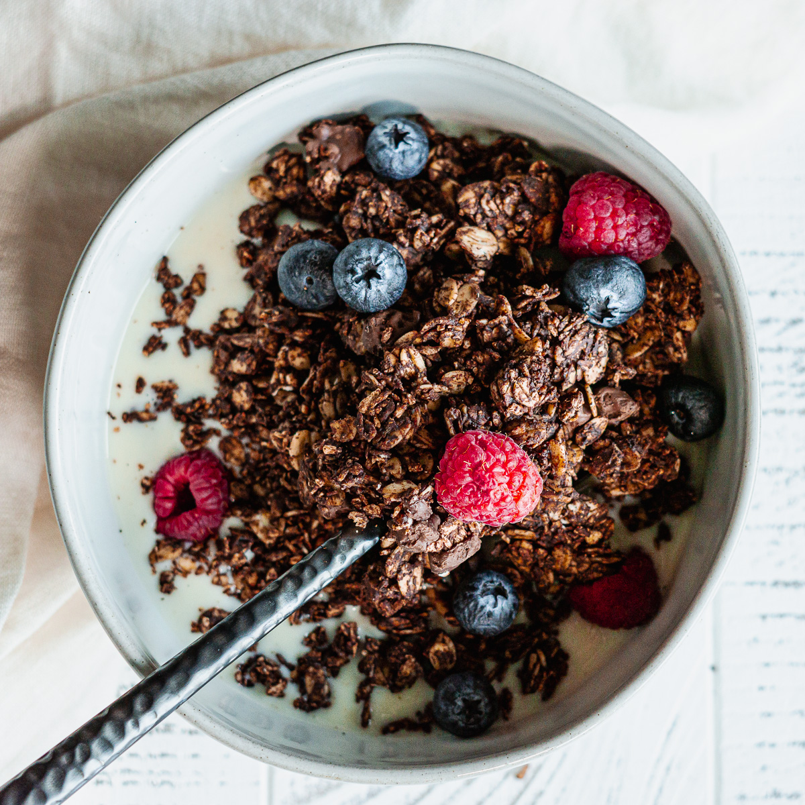

Chocolate Granola Berry Cereal Recipe
This one is pretty basic but it's hella tasty, especially if you're under the influence
of something leafy and green. It's a classic from all the summer nights I spent lonely and high as balls last year.
Ingredients
- Whatever amount of Honey bunches of oats with almonds your heart desires
- A handful of blueberries and raspberries
- A handful of dark chocolate granola (two if you have ADHD and need the dopamine)
- Milk (nondairy if you care about the planet)
How its Made
- Put the honey bunches of oats in a bowl FIRST
- Put the granola in the bowl SECOND
- Put the berries in the bowl THIRD
- Put the milk in the bowl LAST-- this ensures the milk to cereal ratio is optimal
- EAT IT UP
The finished product

Image from sharethespice
Home